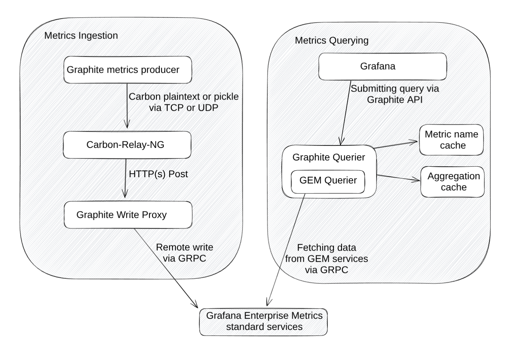
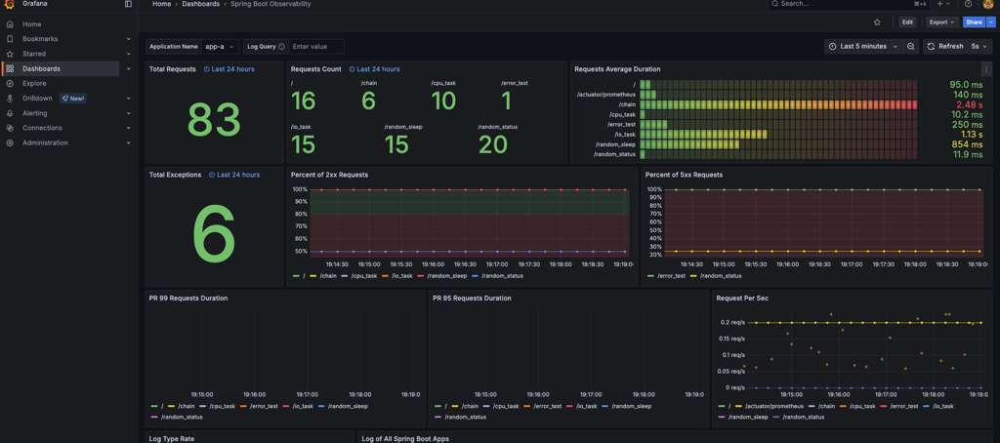

1. Grafana Overview
Grafana 📊
Overview - What it does
Grafana is the final layer in our observability stack—it's the universal visualization, analysis, and alerting platform. At its core, Grafana is an open-source web application designed to help you query, visualize, and understand your metrics, logs, and traces, no matter where they are stored.
Unlike Prometheus or Loki, Grafana is data-source agnostic. It doesn't store data itself; instead, it acts as a powerful front-end, connecting to various back-end databases (like Prometheus, Loki, MySQL, ElasticSearch, and many others) and transforming their raw data into beautiful, actionable dashboards.
The Visualization Layer
Grafana's main component is the dashboard, which is composed of several panels. A panel is a single visualization (a graph, a single stat, or a table) representing data fetched from one or more data sources. This allows engineers to consolidate all aspects of their system's health onto a single screen.
History
Grafana was originally released in 2014 as a fork of Kibana 3, but was quickly re-architected to focus entirely on flexible time-series visualization. Its popularity exploded with the rise of the Prometheus and Kubernetes ecosystems, establishing itself as the de-facto standard for operational dashboards in cloud-native environments.

2. Data Sources
The first step in using Grafana is defining a Data Source. This is a connection configuration that tells Grafana how to reach and query your back-end storage systems.
Connecting the Triad (Loki & Prometheus)
In our stack, the two most critical data sources are Prometheus (for metrics) and Loki (for logs).
Prometheus Data Source Configuration
You simply tell Grafana the URL where your Prometheus server is running
(e.g., http://localhost:9090) and set the data source name, typically
Prometheus. Grafana then knows to use PromQL to query this source.
Loki Data Source Configuration
Similarly, you provide the URL for your Loki server (e.g.,
http://loki:3100). Grafana uses the LogQL language to query this
source, allowing you to filter and aggregate log lines.
Grafana's ability to seamlessly switch between data sources within the same dashboard is what makes the Metrics-Logs-Traces (MLT) correlation possible, forming the basis of true observability.
3. Panels & Dashboards
A Dashboard is the container for all your visualizations, while a Panel is the specific visualization component.
Panel Types
Grafana offers a wide array of visualization options, allowing you to choose the best format for the data you are presenting:
- Graph (Time Series): The standard line graph for showing trends over time (e.g., CPU utilization, request rate).
- Stat (Single Value): Displays a large single number, often the latest value or an aggregate (e.g., current error count).
- Table: Excellent for showing detailed, labeled data or logs.
- Heatmap: Used for visualizing distributions over two dimensions, often latency over time.
The Query Editor
Every panel has a Query Editor where you select the Data Source and write the query (e.g., PromQL or LogQL). Grafana provides auto-completion and a query builder to make this process easier.
Dashboard Best Practice: Always design dashboards for a specific audience or purpose. For example, a high-level "Executive Dashboard" should only show 5-7 key health metrics, while a "Debugging Dashboard" should contain highly detailed metrics and correlating logs.
4. Variables & Filters
Variables are one of the most powerful features in Grafana, enabling interactive, reusable, and dynamic dashboards.
What is a Variable?
A variable is a value that can be changed through a dropdown list at the top of the dashboard. When you change the variable's value, the query in every panel on that dashboard automatically updates to filter the results.
Example: Instance Filtering
Instead of creating separate dashboards for every server (instance), you can
use a variable called $instance.
PromQL Query using a Variable:
http_requests_total{instance="$instance"}
The variable's values can be automatically populated by running a PromQL
query against your Prometheus source (e.g., label_values(up, instance)).
Variables transform a static dashboard into an interactive control panel, allowing users to dynamically filter by service, container, hostname, or user group.
5. Building Observability Views
The goal of using Grafana with Prometheus and Loki is to establish clear links between your metrics, logs, and traces.
The Logs & Metrics Connection
Grafana allows you to jump directly from a metric spike to the related logs at that exact time.
- Process: You see a spike in a metric (e.g., request error rate) on a Graph panel.
- Drilldown: You click on the spike, and Grafana can be configured to open a linked panel or dashboard that automatically queries Loki using the same labels (like `service="web-api"`) for that time window.
Key Concept (MLT Correlation): A mature Grafana dashboard provides a unified view. It allows the user to identify an anomaly (Metrics), investigate the cause (Logs), and isolate the problematic code path (Traces), all without leaving the platform.
6. Sharing & Organizing Dashboards
The value of a dashboard is maximized when it is easily shareable and well-organized.
Provisioning (Code-Based Management)
While you can create dashboards manually in the UI, modern practice dictates using Dashboard Provisioning. Dashboards are defined as JSON files and stored in your version control system (like Git). Grafana is configured to automatically load these files on startup, ensuring that dashboards are version-controlled and consistent across all environments.
Folders and Permissions
Grafana uses Folders to logically group dashboards (e.g., "Team A Services," "Infrastructure"). This is crucial for manageability and for applying Permissions to control which teams or users can view or edit specific sets of operational data.
Module Completion
Not marked as complete yet.